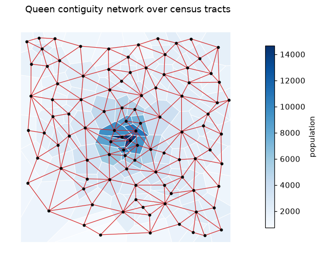
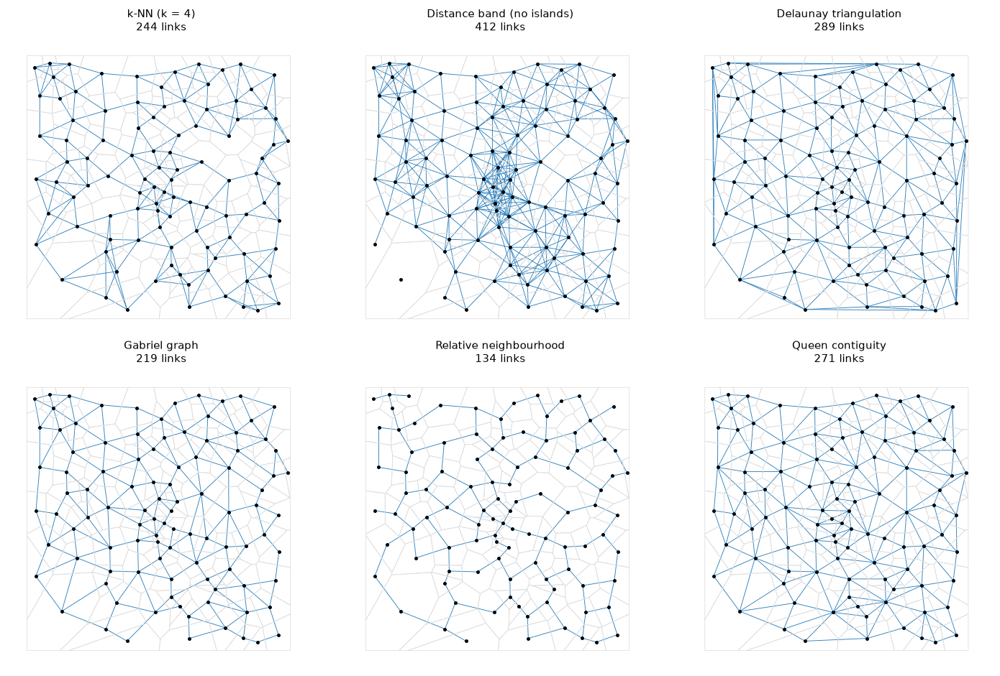
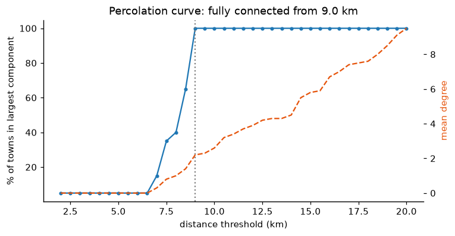
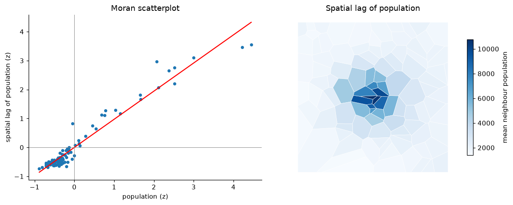
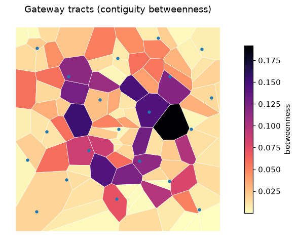
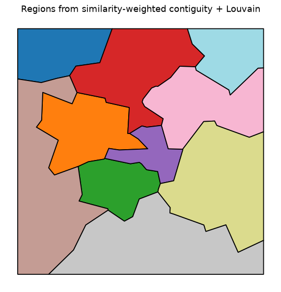

Not every spatial network is downloaded ready-made. Often you start with a GeoDataFrame (census tracts, farms, monitoring stations, river lines) and must decide what counts as a connection. That choice defines neighbours in spatial regression, diffusion paths, and regions that clustering can form.
This notebook builds networks from polygons, points, and lines with libpysal and geolattice.spatial_analysis.network_analysis (weights_to_graph, morans_i, lines_to_graph, …) using Data/00_shared/data_spatial_net/tracts.geojson.
Geometry
Connection rule
Tool
Polygons
Rook / Queen contiguity
libpysal.weights → sna.weights_to_graph
Points
k-NN, distance band, Delaunay / Gabriel / RNG
same
Lines
Shared endpoints (snapped)
sna.lines_to_graph
Setup
The next cell finds the repository root, puts it on the import path, points DATA at data/data_spatial_net, and imports geolattice.spatial_analysis.network_analysis as sna.
Installation. This notebook needs installation option 2 (core plus spatial analysis): pip install "geolattice[analysis]". See “Installation options” in the GeoLattice README.
Code
# Display matplotlib figures inline in this Jupyter notebook.%matplotlib inline# Standard library imports for path setup and warning control.import warnings # silence noisy third-party warnings during demosfrom pathlib import Path # filesystem paths for locating sample data# Third-party GIS / network / plotting stack used throughout the notebook.import geopandas as gpd # GeoDataFrame I/O and geometry opsimport matplotlib.pyplot as plt # figure and axes creation for mapsimport networkx as nx # graph algorithms and conversionsimport numpy as np # array ops for distances and matricesimport pandas as pd # tabular display of resultsfrom IPython.display import display # rich table previews in the notebook# Hide library warnings so the notebook output stays readable.warnings.filterwarnings("ignore") # hide library warnings in notebook output# ===================================================================# Setup for spatial network demos.# Import GeoLattice, point DATA at Data/00_shared/data_spatial_net,# and import network_analysis as sna.# ===================================================================# The installed package lives in src/; the repository root is its parent.import geolatticeROOT = Path(geolattice.__file__).resolve().parents[1]ifnot (ROOT /"Data").is_dir():raiseFileNotFoundError("Could not find the GeoLattice repository root.")# Synthetic road / town / tract data used by the network chapter.DATA = ROOT /"Data"/"00_shared"/"data_spatial_net"# chapter sample-data folder under the repo# Spatial network helpers from geolattice.from geolattice.spatial_analysis import network_analysis as sna # spatial network helpers aliased as sna# Compact figures with top/right spines removed for a cleaner look.plt.rcParams.update( # compact figures with cleaner spines {"figure.dpi": 110, "axes.spines.top": False, "axes.spines.right": False} # notebook step)print("repo:", ROOT) # status line for the notebook readerprint("data:", DATA) # status line for the notebook readerprint("networkx", nx.__version__, "| geopandas", gpd.__version__) # status line for the notebook reader# libpysal builds spatial weights; OSMnx helps convert the road graph to lines.import osmnx as ox # graph_to_gdfs for the line-layer demofrom libpysal import weights # Queen/Rook/KNN/distance/Delaunay weights# Tract polygons and town points for contiguity and percolation demos.tracts = gpd.read_file(DATA /"tracts.geojson") # population polygons for demand / contiguitytowns = gpd.read_file(DATA /"towns.geojson") # town points used as routing / flow placesprint(len(tracts), "tracts |", tracts.crs) # status line for the notebook readertracts.head() # run this analysis or plotting step
Rook: neighbours share an edge (a boundary segment of positive length).
Queen: neighbours share at least one point (edge or corner).
Queen therefore always has at least as many links as Rook. libpysal stores the result as a spatial weights object W; W.to_networkx() gives a graph whose nodes are row positions.
Code
# ===================================================================# Queen and Rook contiguity weights on census tracts, then a NetworkX# graph labelled by tract_id with centroids as geographic positions.# ===================================================================# Queen: share an edge or a corner; Rook: share a boundary segment only.w_queen = weights.Queen.from_dataframe(tracts, use_index=False) # Queen contiguity spatial weightsw_rook = weights.Rook.from_dataframe(tracts, use_index=False) # Rook contiguity spatial weightsprint(f"Queen: {w_queen.s0/2:.0f} links, mean neighbours {w_queen.mean_neighbors:.2f}, islands {w_queen.islands}") # status line for the notebook readerprint(f"Rook : {w_rook.s0/2:.0f} links, mean neighbours {w_rook.mean_neighbors:.2f}, islands {w_rook.islands}") # status line for the notebook reader# Convert Queen weights to a NetworkX graph and label nodes by tract_id.G_queen = w_queen.to_networkx() # Queen contiguity NetworkX graphnx.relabel_nodes(G_queen, dict(enumerate(tracts.tract_id)), copy=False) # run this analysis or plotting step# Geographic layout positions from tract centroids.cent = tracts.geometry.centroid # tract centroids (or related centre geometry)pos = {tid: (p.x, p.y) for tid, p inzip(tracts.tract_id, cent)} # node -> (x, y) layout dictionary
Queen: 271 links, mean neighbours 5.37, islands []
Rook : 271 links, mean neighbours 5.37, islands []
Code
# ===================================================================# Map Queen contiguity edges over a population choropleth of tracts.# ===================================================================fig, ax = plt.subplots(figsize=(7, 7)) # square figure for the contiguity maptracts.plot( ax=ax, # draw into the prepared axes column="population", # choropleth attribute cmap="Blues", # sequential colormap edgecolor="white", # light tract boundaries lw=0.6, # thin boundary lines legend=True, # show colorbar legend_kwds={"label": "population", "shrink": 0.6}, # colorbar label and size)nx.draw_networkx_edges(G_queen, pos, ax=ax, edge_color="#d62728", width=0.8) # contiguity linksnx.draw_networkx_nodes(G_queen, pos, ax=ax, node_size=8, node_color="k") # tract centroidsax.set_title("Queen contiguity network over census tracts") # map titleax.set_axis_off() # hide axes for a clean mapplt.show() # render the figure

Why are Queen and Rook identical here? Our tracts are a Voronoi tessellation, where generically exactly three cells meet at every vertex, so any two cells that touch at a corner also share an edge. On regular grids (raster cells, many US county and township layouts) the two rules differ a lot:
Code
# ===================================================================# On a regular square grid, Queen has more links than Rook (corners).# Voronoi tracts above can make Queen and Rook identical.# ===================================================================from shapely.geometry import box # axis-aligned unit squares# Build a 6x6 lattice of unit squares.grid = gpd.GeoDataFrame(geometry=[box(i, j, i +1, j +1) for i inrange(6) for j inrange(6)]) # regular square lattice for Queen vs Rookprint( # status line for the notebook reader"6x6 square grid -> Queen links:", # continue string literal weights.Queen.from_dataframe(grid, use_index=False).s0 /2, # continue multi-line call"| Rook links:", # continue string literal weights.Rook.from_dataframe(grid, use_index=False).s0 /2, # continue multi-line call)
Notice the uneven geometry: small, dense urban tracts near towns and large rural tracts at the edges. Contiguity networks inherit this, so a rural tract and an urban tract both have about six neighbours even though the rural neighbours are many kilometres away. Keep this in mind when interpreting path lengths on contiguity graphs (“number of boundaries crossed”, not distance).
Part B: Point-based networks
For points (or polygon centroids) we need a rule based on distance or geometry.
Code
# ===================================================================# Build several point/polygon neighbour rules and summarise each graph.# Labels come from tract_id so graphs share a common node namespace.# ===================================================================xy = np.c_[cent.x, cent.y] # centroid coordinates as an (n, 2) array# Contiguity, k-NN, distance band, and classical proximity graphs.nets = { # dict of libpysal weights objects by neighbour rule"Queen contiguity": w_queen, # continue string literal"Rook contiguity": w_rook, # continue string literal"k-NN (k = 4)": weights.KNN.from_array(xy, k=4), # continue multi-line call"Distance band (no islands)": weights.DistanceBand.from_array( # continue multi-line call xy, threshold=weights.min_threshold_distance(xy), binary=True# run this analysis or plotting step ),"Delaunay triangulation": weights.Delaunay(xy), # continue multi-line call"Gabriel graph": weights.Gabriel(xy), # continue multi-line call"Relative neighbourhood": weights.Relative_Neighborhood(xy), # continue multi-line call}# Convert each libpysal W to a labelled NetworkX graph.graphs = {k: sna.weights_to_graph(w, labels=list(tracts.tract_id)) for k, w in nets.items()} # dict of labelled NetworkX graphs by neighbour rule# Side-by-side spatial-graph descriptors (degree, components, etc.).pd.DataFrame({k: sna.describe_spatial_graph(g, pos) for k, g in graphs.items()}).T.round(2) # call a geolattice.network_analysis helper
links
mean degree
max degree
components
clustering
mean link km
max link km
Queen contiguity
271.0
5.37
10.0
1.0
0.46
4.37
9.46
Rook contiguity
271.0
5.37
10.0
1.0
0.46
4.37
9.46
k-NN (k = 4)
244.0
4.83
8.0
1.0
0.44
4.12
9.35
Distance band (no islands)
412.0
8.16
16.0
2.0
0.55
4.68
6.63
Delaunay triangulation
289.0
5.72
9.0
1.0
0.44
4.95
26.93
Gabriel graph
219.0
4.34
7.0
1.0
0.33
4.08
8.45
Relative neighbourhood
134.0
2.65
4.0
1.0
0.00
3.58
7.23
Code
# ===================================================================# Draw six neighbour graphs over faint tract boundaries for comparison.# ===================================================================fig, axes = plt.subplots(2, 3, figsize=(13, 8.6)) # create a grid of subplot axesfor ax, name inzip( # continue multi-line call axes.flat, # notebook step [ # notebook step"k-NN (k = 4)", # continue multi-line call"Distance band (no islands)", # continue multi-line call"Delaunay triangulation", # continue string literal"Gabriel graph", # continue string literal"Relative neighbourhood", # continue string literal"Queen contiguity", # continue string literal ],): tracts.boundary.plot(ax=ax, color="#dddddd", lw=0.5) # faint tract outlines nx.draw(graphs[name], pos, ax=ax, node_size=5, width=0.6, node_color="k", edge_color="#3182bd") # draw the NetworkX graph ax.set_title(f"{name}\n{graphs[name].number_of_edges()} links", fontsize=10) # panel / map titleplt.tight_layout() # reduce wasted whitespace between panelsplt.show() # render the figure in the notebook

How to choose.
k-NN guarantees every unit has neighbours and adapts to density, but the relation is asymmetric before symmetrising and k is arbitrary.
Distance band has a physical meaning (“within 6.6 km”), but beware: min_threshold_distance only guarantees that every unit has at least one neighbour (no islands), not that the network is connected. Here it still leaves two components. And in uneven settlement patterns the threshold large enough to connect rural points links dense urban points to dozens of neighbours.
Delaunay → Gabriel → Relative neighbourhood form a nested hierarchy of increasingly sparse proximity graphs (RNG ⊆ Gabriel ⊆ Delaunay). They need no parameters and are planar, which makes them good stand-ins for “who can plausibly interact with whom” in the absence of real links.
Check the nesting directly:
Code
# ===================================================================# Verify the nested proximity hierarchy: RNG ⊆ Gabriel ⊆ Delaunay.# ===================================================================# Undirected edge sets with sorted endpoint tuples for set comparison.E = { # edge-set dictionary for nesting checks k: {tuple(sorted(e)) for e in graphs[k].edges} # run this analysis or plotting stepfor k in ["Delaunay triangulation", "Gabriel graph", "Relative neighbourhood"] # notebook step}print("RNG ⊆ Gabriel :", E["Relative neighbourhood"] <= E["Gabriel graph"]) # status line for the notebook readerprint("Gabriel ⊆ Delaunay:", E["Gabriel graph"] <= E["Delaunay triangulation"]) # status line for the notebook reader
RNG ⊆ Gabriel : True
Gabriel ⊆ Delaunay: True
Part C: Choosing a distance threshold: the percolation curve
For a distance-band network, plot the size of the largest connected component as the threshold grows. The curve shows a sharp percolation transition: below it the network is fragmented, above it almost everything joins one component. Here we use the 20 towns as nodes.
Code
# ===================================================================# Percolation curve for town distance-band networks.# Track largest-component share and mean degree as the threshold grows.# ===================================================================txy = np.c_[towns.geometry.x, towns.geometry.y] # town coordinates (metres)# Pairwise Euclidean distance matrix between towns.D = np.hypot(txy[:, None, 0] - txy[None, :, 0], txy[:, None, 1] - txy[None, :, 1]) # pairwise distance matrixthresholds = np.arange(2_000, 20_001, 500) # metresrows = [] # accumulate one record per edge / pair / scenariofor d in thresholds: # iterate over the collection g = nx.from_numpy_array((D <= d) & (D >0)) # undirected distance-band graph largest =len(max(nx.connected_components(g), key=len)) # nodes in giant component rows.append({ # append this record"km": d /1000, # continue string literal"largest component %": 100* largest /len(towns), # continue multi-line call"components": nx.number_connected_components(g), # continue multi-line call"mean degree": 2* g.number_of_edges() /len(towns), # continue multi-line call })perc = pd.DataFrame(rows) # percolation curve tablefig, ax = plt.subplots(figsize=(7.5, 3.6)) # create figure and primary axesax.plot(perc.km, perc["largest component %"], marker="o", ms=3, label="largest component %") # draw lines or edges on the axesax2 = ax.twinx() # second y-axis for mean degreeax2.plot(perc.km, perc["mean degree"], color="#e6550d", ls="--", label="mean degree") # draw geometries or a series on the axesfirst_full = perc.loc[perc["largest component %"] ==100, "km"].min() # first fully connected kmax.axvline(first_full, color="grey", ls=":") # run this analysis or plotting stepax.set( # set labels, title, or axis limits xlabel="distance threshold (km)", # x-axis label ylabel="% of towns in largest component", # y-axis label title=f"Percolation curve: fully connected from {first_full:.1f} km", # plot or map title)ax2.set_ylabel("mean degree", color="#e6550d") # run this analysis or plotting stepplt.show() # render the figure in the notebook

A sensible threshold is often just above the transition: connected, but not so large that every town links to every other. Compare it with weights.min_threshold_distance, which is the smallest distance at which no town is isolated. For these towns the two nearly coincide; for the tract centroids in Part B they did not, which is why the percolation curve is the safer check.
Code
# ===================================================================# min_threshold_distance: smallest radius with no isolated towns.# Compare with the percolation transition from the previous cell.# ===================================================================print(f"min_threshold_distance for towns: {weights.min_threshold_distance(txy)/1000:.2f} km") # status line for the notebook reader
min_threshold_distance for towns: 8.88 km
Part D: Using the network for spatial statistics
A spatial weights matrix is a network, row-standardised so that each unit’s neighbour weights sum to 1. Two foundational quantities follow:
Spatial lag\(Wy\): the average value among a unit’s neighbours.
Moran’s I: correlation between \(y\) and its spatial lag, the standard measure of spatial autocorrelation.
\[I = \frac{n}{S_0}\frac{z^\top W z}{z^\top z}, \quad z = y - \bar y\]
We compute both directly with NumPy on the Queen network and test significance by randomly permuting values across tracts.
Code
# ===================================================================# Moran's I for population, income, and pct_over65 on Queen weights.# Significance from 999 random permutations of values across tracts.# ===================================================================# Adjacency matrix in tract_id order, then row-standardise to W.W = nx.to_numpy_array(graphs["Queen contiguity"], nodelist=list(tracts.tract_id)) # adjacency matrix in tract_id orderWr = sna.row_standardize(W) # row-standardised spatial weights matrixresults = [] # collect index / scenario result rowsfor var in ["population", "median_income", "pct_over65"]: # iterate over the collection y = tracts[var].to_numpy(float) # attribute vector aligned with W stats = sna.morans_i(y, Wr, permutations=999, seed=42) # I, E[I], pseudo-p results.append({ # append this record"variable": var, # continue string literal"Moran's I": stats["I"], # continue string literal"E[I] under randomness": stats["E[I]"], # continue string literal"pseudo p": stats["pseudo_p"], # continue string literal })pd.DataFrame(results).round(3) # run this analysis or plotting step
variable
Moran's I
E[I] under randomness
pseudo p
0
population
0.810
-0.01
0.001
1
median_income
0.032
-0.01
0.234
2
pct_over65
0.051
-0.01
0.149
Code
# ===================================================================# Moran scatterplot and map of the spatial lag of population.# ===================================================================# Spatial lag = average neighbour population under row-standardised W.tracts["pop_lag"] = Wr @ tracts.population.to_numpy(float) # run this analysis or plotting step# Standardise y and Wy for the classic Moran scatterplot axes.z = (tracts.population - tracts.population.mean()) / tracts.population.std() # standardised attribute for Moran scatterzl = (tracts.pop_lag - tracts.pop_lag.mean()) / tracts.pop_lag.std() # standardised spatial lagfig, axes = plt.subplots(1, 2, figsize=(11, 4.4)) # create a grid of subplot axesaxes[0].scatter(z, zl, s=14) # scatter points on the axesb = np.polyfit(z, zl, 1) # slope approximates Moran's I on z-scoresxs = np.linspace(z.min(), z.max(), 10) # x grid for the fitted Moran lineaxes[0].plot(xs, np.polyval(b, xs), "r-") # draw geometries or a series on the axesaxes[0].axhline(0, color="grey", lw=0.6) # run this analysis or plotting stepaxes[0].axvline(0, color="grey", lw=0.6) # run this analysis or plotting stepaxes[0].set(xlabel="population (z)", ylabel="spatial lag of population (z)", title="Moran scatterplot") # configure this subplot's labels or titletracts.plot( # draw geometries or a series on the axes ax=axes[1], # draw into these axes column="pop_lag", # attribute used for the choropleth cmap="Blues", # colormap for continuous / categorical values legend=True, # show a legend or colour bar edgecolor="white", # polygon / marker edge colour lw=0.4, # line width legend_kwds={"shrink": 0.7, "label": "mean neighbour population"}, # legend / colour-bar styling)axes[1].set_title("Spatial lag of population") # configure this subplot's labels or titleaxes[1].set_axis_off() # configure this subplot's labels or titleplt.tight_layout() # reduce wasted whitespace between panelsplt.show() # render the figure in the notebook

Population is strongly clustered (tracts near towns border other dense tracts). Income, simulated with only a weak link to population, shows little autocorrelation. Results depend on the network: try Exercise 2 to see how Moran’s I changes with k-NN or distance-band definitions.
Part E: Network measures on a contiguity graph
E1. Gateway tracts
Betweenness on a contiguity graph highlights tracts that sit between many others. They are natural candidates for monitoring in contagion problems, because anything spreading tract to tract is likely to pass through them.
Code
# ===================================================================# Contiguity betweenness highlights gateway tracts on the Queen graph.# ===================================================================bc = nx.betweenness_centrality(graphs["Queen contiguity"]) # node betweennesstracts["betweenness"] = tracts.tract_id.map(bc) # run this analysis or plotting stepfig, ax = plt.subplots(figsize=(6.5, 6.5)) # create figure and primary axestracts.plot( # draw geometries or a series on the axes ax=ax, # draw into these axes column="betweenness", # attribute used for the choropleth cmap="magma_r", # colormap for continuous / categorical values legend=True, # show a legend or colour bar edgecolor="white", # polygon / marker edge colour lw=0.4, # line width legend_kwds={"shrink": 0.6, "label": "betweenness"}, # legend / colour-bar styling)towns.plot(ax=ax, color="#1f77b4", markersize=10) # towns for geographic contextax.set_title("Gateway tracts (contiguity betweenness)") # panel / map titleax.set_axis_off() # hide coordinate ticks for a clean mapplt.show() # render the figure in the notebook

E2. Contiguous regions with community detection
Weight each contiguity link by similarity in the attributes of interest, then run Louvain. Because links exist only between neighbours, communities tend to be spatially contiguous regions (a lightweight alternative to dedicated regionalisation methods such as SKATER or max-p in spopt).
Code
# ===================================================================# Similarity-weighted Queen edges + Louvain for contiguous regions.# Edge weight decays with attribute distance (age share, income).# ===================================================================Gw = graphs["Queen contiguity"].copy() # weighted contiguity graph for community detection# Z-score the attributes used to measure neighbour similarity.attrs = tracts.set_index("tract_id")[["pct_over65", "median_income"]] # z-scored attributes for similarity weightsattrs = (attrs - attrs.mean()) / attrs.std() # z-scored attributes for similarity weights# Higher weight when neighbouring tracts have similar attributes.for u, v in Gw.edges: # iterate over the collection Gw.edges[u, v]["weight"] = np.exp(-np.linalg.norm(attrs.loc[u] - attrs.loc[v])) # run this analysis or plotting step# Louvain communities on the weighted contiguity graph.comms = nx.community.louvain_communities(Gw, weight="weight", resolution=1.0, seed=7) # Louvain communities / regionstracts["region"] = tracts.tract_id.map({n: i for i, c inenumerate(comms) for n in c}) # run this analysis or plotting step# Contiguity constraint check: each community should induce a connected subgraph.contig = [nx.is_connected(Gw.subgraph(c)) for c in comms] # whether each community is spatially connectedprint( # status line for the notebook readerf"{len(comms)} regions; all spatially contiguous: {all(contig)}; "# run this analysis or plotting stepf"modularity = {nx.community.modularity(Gw, comms, weight='weight'):.3f}"# run this analysis or plotting step)fig, ax = plt.subplots(figsize=(6.5, 6.5)) # create figure and primary axestracts.dissolve("region").reset_index().plot( # draw geometries or a series on the axes ax=ax, column="region", cmap="tab20", edgecolor="k", lw=1.2, categorical=True# draw into these axes)ax.set_title("Regions from similarity-weighted contiguity + Louvain") # panel / map titleax.set_axis_off() # hide coordinate ticks for a clean mapplt.show() # render the figure in the notebook# Region-level population sum and mean attribute profiles.tracts.groupby("region")[["population", "pct_over65", "median_income"]].agg( # continue multi-line call {"population": "sum", "pct_over65": "mean", "median_income": "mean"} # notebook step).round(1) # run this analysis or plotting step
10 regions; all spatially contiguous: True; modularity = 0.708

population
pct_over65
median_income
region
0
13202
18.8
56523.4
1
29679
17.3
50661.0
2
42048
16.0
55410.5
3
30770
20.9
55009.9
4
78330
18.9
50289.9
5
15029
24.7
61555.6
6
22998
15.4
48597.3
7
26208
21.8
53985.7
8
35818
19.5
48460.1
9
11401
23.9
54916.7
Part F: From a line layer to a routable graph
Shapefiles of roads, rivers, pipelines or power lines are line GeoDataFrames without topology. A graph appears once we treat each line’s endpoints as nodes. Real data usually need snapping (rounding coordinates) so that lines that should meet actually share a node.
Code
# ===================================================================# Treat road edges as a plain line GeoDataFrame and rebuild a graph# by snapping shared endpoints (lines_to_graph).# ===================================================================# Pretend the road LineStrings came from a shapefile without topology.lines = ox.graph_to_gdfs(sna.load_road_graph(DATA /"roads.graphml"), nodes=False).reset_index(drop=True) # line GeoDataFrame treated as a shapefilelines = lines[["highway", "geometry"]] # pretend this came from a shapefileprint(type(lines), len(lines), "line features") # status line for the notebook reader# Snap endpoints within 1 m so lines that should meet share a node.G_lines = sna.lines_to_graph(lines, snap=1.0) # graph rebuilt from line endpointsprint(G_lines, "| components:", nx.number_connected_components(G_lines)) # status line for the notebook reader# Sample shortest-path length between two arbitrary endpoints.a, b =list(G_lines.nodes)[0], list(G_lines.nodes)[-1] # run this analysis or plotting stepprint( # status line for the notebook readerf"shortest path between two endpoints: "# continue string literalf"{nx.shortest_path_length(G_lines, a, b, weight='length')/1000:.1f} km"# run this analysis or plotting step)
<class 'geopandas.geodataframe.GeoDataFrame'> 1416 line features
Graph with 439 nodes and 708 edges | components: 1
shortest path between two endpoints: 50.0 km
For production work, momepy.gdf_to_nx does the same with options for primal (intersections as nodes) and dual (streets as nodes) graphs, and momepy.nx_to_gdf returns to GeoDataFrames.
Summary
The connection rule is the model: contiguity, k-NN, distance band, and proximity graphs give very different networks from the same data.
libpysal W objects and NetworkX graphs convert freely (W.to_networkx(), weights.W.from_networkx).
Use a percolation curve or min_threshold_distance to pick distance thresholds defensibly.
Spatial lag and Moran’s I are network operations; betweenness and community detection on contiguity graphs give gateway areas and contiguous regions.
Line layers become graphs by joining shared endpoints, with snapping for messy data.
Exercises
Rebuild Part B with k = 2, 6, and 8. At what k does the k-NN graph become connected?
Recompute Moran’s I for pct_over65 with the k-NN (k = 4), distance-band and Gabriel networks. How sensitive is the conclusion?
Increase the Louvain resolution to 1.5 and 2.0. Do the regions remain contiguous?
Add random noise of ±3 m to line endpoints, then run lines_to_graph with snap=1 and snap=10. How many components does each produce?
Next: 03.06.4 combines the road network with tracts and hospitals for service-area and access analysis.